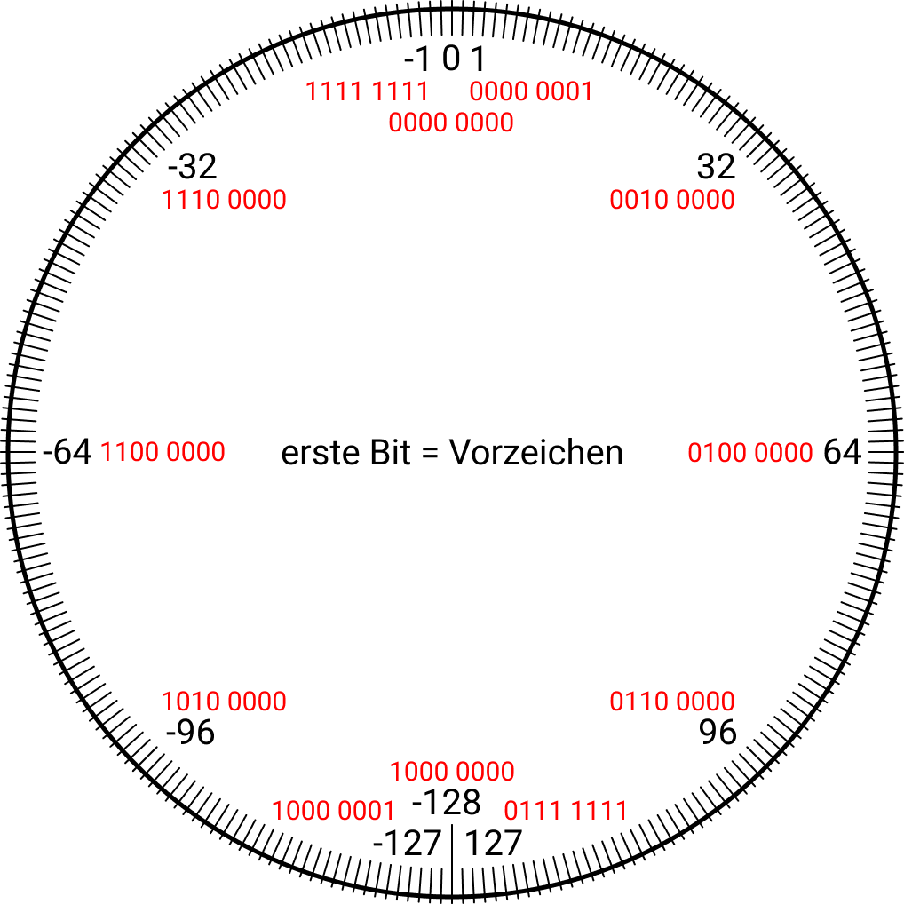
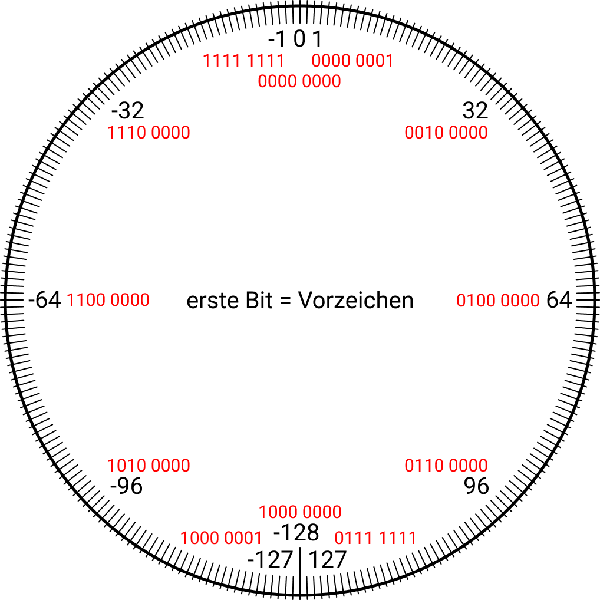
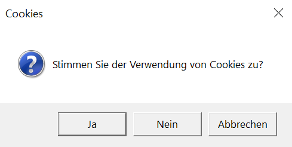

C#
Grundlagen
Datentypen
einfache Datentypen
Eigenschaften
Einfache Datentypen (engl.: Value Types) haben folgende Eigenschaften:
| können NICHT "null" sein |
| enthalten Daten im eigenen Speicher |
| sind meistens im Stack gespeichert (Variablen einer Class oder Struct sind dort gespeichert, wo auch die Class / Struct gespeichert ist; z.B.: Heap) |
| erben von System.ValueType |
| von einem einfachen Datentyp kann man NICHT erben |
| Wenn man einen einfachen Datentyp kopiert, kopiert man nur die Daten in einen neuen Datentyp. Eine Änderung der Daten des einen Datentyps führt NICHT zur Änderung der Daten des anderen Datentyps. |
Wertebereiche
Überblick über alle einfachen Datentypen (nach Größe, Nachkommastellen und Positiv/Negative sortiert):
| Typ | Wertebereich |
|---|---|
| Bool | true oder false |
| SByte | -128 bis 127 |
| Byte | 0 bis 255 |
| Short | -215 bis 215-1 |
| UShort | 0 bis 65535 |
| Int | -231 bis 231-1 |
| UInt | 0 bis 232-1 |
| Long | -263 bis 263-1 |
| ULong | 0 bis 264-1 |
| Float |
1,4 * 10-45 bis 3,4 * 1038 |
| Double |
5,0 * 10-324 bis 1,7 * 10308 |
| Decimal |
keine Nachkommastellen:
±7927
mit Nachkommastellen: ±7,9‑29 |
| Object | Eine Variable vom Typ Object kann jeden anderen Datentyp enthalten, ist also universell. |
Wertebereich erklärt
Alle Zahlen werden in Wahrheit binär gespeichert.
Dabei kommt die Frage auf, wie man nun am besten negative Zahlen speichern soll.
Die einfachste Lösung ist wahrscheinlich das erste Bit einer Zahl.
Das SByte sieht zum Beispiel auf einer runden Zahlengerade so aus:  Dadurch, dass Zahlen in C# so aufgebaut sind, lassen sich lustige Programme schreiben:
Das SByte sieht zum Beispiel auf einer runden Zahlengerade so aus:  Dadurch, dass Zahlen in C# so aufgebaut sind, lassen sich lustige Programme schreiben:
{kind=link}
sbyte mySByte;
mySByte = 127;
mySByte++;
Console.WriteLine(mySByte);
// Ausgabe: -128
mySByte = 127;
mySByte++;
Console.WriteLine(mySByte);
// Ausgabe: -128
Operationen mit Zahlen
Alle numerischen Datentypen können addiert,
<Datentyp> summe = 4 + 3;
subtrahiert,
<Datentyp> differenz = 8 - 5;
multipliziert und
<Datentyp> produkt = 3 * 13;
moduliert (Restwert beim Dividieren) werden.
<Datentyp> rest = 7 % 2; // Ergebnis 1, weil 7/2 -> 1 Rest
Beim Dividieren muss man bei dem jeweiligen Datentyp aufpassen, dass das Ergebnis auch in den Wertebereich hineinpasst:
<Datentyp> quotient = (<Datentyp>)(12 / 5);
Noch viele weitere Operationen mit Zahlen finde Sie unter Grundlagen -> wichtige Klassen -> Math / Mathf.
Int
Integer haben einen Wertebereich von -2147483648 bis 2147483647 und sind damit wahrscheinlich der am öftesten verwendete numerische Datentyp.
Die Deklaration des Integers ist ziemlich einfach:
Die Deklaration des Integers ist ziemlich einfach:
int myInt;
Die Initialisierung des Integers ist ebenfalls simple:
myInt = 0;
So wie bei fast allen anderen Datentyp auch, kann man Deklaration und Initialisierung in einer Zeile programmieren:
int myInt = 0;
Double
Die Deklaration des Double:
double myDouble;
Die Initialisierung des Double:
myDouble = Math.PI;
Float
Die Deklaration des Float:
float myFloat;
Die Initialisierung des Float:
myFloat = 3.1415926f;
Das "f" hinter der Zahl sorgt dafür, dass die Zahl in einen Float konvertiert wird.
Decimal
Die Deklaration des Decimal:
decimal myDecimal;
Die Initialisierung des Decimal:
myDecimal = (decimal)new Random().NextDouble();
Bool
Die Deklaration eines Bool'schen Wertes:
bool myBool;
Die Initialisierung des Bool:
myBool = true;
Struct
Das ist der Aufbau eines Structs:
struct <Structname>
Hier ein Beispiel für ein Struct:
{
// Variablen und Methoden
}
struct MyStruct
int x;
int y;
// Konstruktor
public MyStruct(int x, int y)
this.y = y;
// Methoden
public string GetXY()
Die Deklaration eines Structs sieht folgendermaßen aus:
{
// Variablen int x;
int y;
// Konstruktor
public MyStruct(int x, int y)
{
this.x = x; this.y = y;
}
// Methoden
public string GetXY()
{
return x + " " + y;
}
}
MyStruct myStruct;
Initialisierung:
myStruct = new MyStruct();
Mehr Infos bezüglich Struct finden Sie unter Grundlagen -> Refernztypen -> Class.
short
Ein Short hat einen Zahlenberech von -32768 bis 32767.
Die Deklaration sieht wie folgt aus:
short myShort;
Die Initialisierung des Short:
myShort = 1;
long
Ein Long hat einen Zahlenberech von -9223372036854775808 bis 9223372036854775807.
Die Deklaration sieht wie folgt aus:
long myLong;
Die Initialisierung des Long:
myLong = 0;
byte
Ein Byte hat einen Zahlenberech von 0 bis 255.
Die Deklaration sieht wie folgt aus:
byte myByte;
Die Initialisierung des Byte:
myByte = 255;
sbyte
Ein SByte hat einen Zahlenberech von -128 bis 127.
Die Deklaration sieht wie folgt aus:
sbyte mySByte;
Die Initialisierung des SByte:
mySByte = -128;
uint
Ein UInt hat einen Zahlenberech von 0 bis 4294967295.
Die Deklaration sieht wie folgt aus:
uint myUInt;
Die Initialisierung des UInt:
myUInt = 4294967295;
ushort
Ein UShort hat einen Zahlenberech von 0 bis 65535.
Die Deklaration sieht wie folgt aus:
ushort myUShort;
Die Initialisierung des UShort:
myUShort = 65535;
ulong
Ein ULong hat einen Zahlenberech von 0 bis 18446744073709551615.
Die Deklaration sieht wie folgt aus:
ulong myULong;
Die Initialisierung des ULong:
myULong = 18446744073709551615;
Referenztypen
Eigenschaften
Referenztypen (engl.: Referencetypes) haben folgende Eigenschaften:
| können "null" sein |
| verweisen auf Daten, die im Stack liegen |
| sind meistens im Heap gespeichert |
| erben von System.Object |
| von einem Referenztyp kann man erben |
| Wenn man einen Referenztyp kopiert, kopiert man den Verweis auf die Daten. Eine Änderung der Daten des einen Referenztyps führt auch zur Änderung der Daten des anderen Refernztyps. |
Char
Ein Char ist ein String, der nur aus einem Zeichen bestehen darf.
Ein Char kann jedes Unicode-Zeichen enthalten.
Deklaration eines Char:
Deklaration eines Char:
char myChar;
Die Initialisierung eines Char:
myChar = 'c';
String
Ein String ist eine Zeichenkette, welche eine maximale Größe von 2048 Bytes zulässt.
Ein String ist unveränderbar. Ändert man den String, wird eigentlich ein neuer String erzeugt.
Deklaration eines String:
Deklaration eines String:
string myString;
Die Initialisierung eines String:
myString = "Schneider";
Array
Ein Array ist Ansammlung an Feldern, zum Beispiel Strings oder Integer.
Man kann sich Arrays wie Tabellen vorstellen (zumindest bis zu 3D-Arrays).
Es gibt ein-, mehrdimensionale und Jagged Arrays.
Wie der Name schon sagt, ist ein eindimensionales Array einfach eine Reihe an Feldern, ein zweidimensionales Array eine Tabellen mit Spalten und Reihen und ein dreidimensionale Arrays ist ein großer Würfel mit vielen, gleich großen Würfeln (Feldern) in x, y und z Richtungen.
Die Deklaration und die Instanziierung eines Arrays sehen bereits etwas komplizierter aus, jedoch ist der Grundaufbau bei fast allen Referenztypen gleich (das Schlüsselwort new bei Instanziierung gibt es nur bei Referenztypen):
Für mehrdimensionale Arrays gibt es diese Beispiele (Syntax kann endlos so fortgesetzt werden): Eine Initialisierung der einzelnen Felder eines Arrays sieht zum Beispiel so aus:
Eine Initialisierung der einzelnen Felder eines Arrays sieht zum Beispiel so aus:
Die Deklaration und die Instanziierung eines Arrays sehen bereits etwas komplizierter aus, jedoch ist der Grundaufbau bei fast allen Referenztypen gleich (das Schlüsselwort new bei Instanziierung gibt es nur bei Referenztypen):
<Datentyp>[] myArray;
myArray = new <Datentyp>[<Anzahl an Feldern>];
Ein Beispiel zur Vereinfachung und Verdeutlichung der Syntax:
int[] myIntArray = new int[3];
In dem Beispiel wird ein Array aus Integern deklariert und mit 3 Feldern instanziiert.
Für mehrdimensionale Arrays gibt es diese Beispiele (Syntax kann endlos so fortgesetzt werden):
int[,] myIntArray2 = new int[2, 4];
int[,,] myIntArray3 = new int[3, 3, 3];
Letzteres Array kann man sich so vorstellen:
Eine Initialisierung der einzelnen Felder eines Arrays sieht zum Beispiel so aus:
myIntArray[0] = -10;
Außerdem kann man bei Arrays die Deklarierung, Instanziierung des Arrays und die Initialisierung der Elemente gemeinsam durchführen:
int[] myIntArray = new int[] { 1, 3, 5, 7, 9 };
Eine alternative Syntax ist diese:
int[] myIntArray = { 1, 2, 3, 4, 5, 6 };
Ein Jagged Array ist ein Array, dessen Elemente wiederrum Arrays sind.
int[][] myIntJaggedArray = new int[6][];
myIntJaggedArray[0] = new int[4] { 1, 2, 3, 4 };
Das eignet sich zum Beispiel ideal für einen Kalender, weil nicht jeder Monat gleich viele Tage hat.
using System.Globalization;
using System.Text;
class Calendar
public Calendar(int year)
Values = new string[12][];
for (int i = 0; i < 12; i++)
{
Values[i] = new string[calendar.GetDaysInMonth(year, i + 1)];
}
public override string ToString()
foreach (var month in Values)
{
foreach (var day in month)
{
sb.Append(day.ToString() + ", ");
}
sb.AppendLine();
}
return sb.ToString();
using System.Text;
class Calendar
{
public string[][] Values { get; private set; } public Calendar(int year)
{
GregorianCalendar calendar = new GregorianCalendar(); Values = new string[12][];
for (int i = 0; i < 12; i++)
{
Values[i] = new string[calendar.GetDaysInMonth(year, i + 1)];
}
}
public override string ToString()
{
StringBuilder sb = new StringBuilder(); foreach (var month in Values)
{
foreach (var day in month)
{
sb.Append(day.ToString() + ", ");
}
sb.AppendLine();
}
return sb.ToString();
}
}
List
Eine Liste ist wie ein Array, nur mit dem Unterschied, dass Listen keine feste Größe haben, die man am Anfang angeben muss.
Man kann einfach immer wieder Elemente hinzufügen.
Die Liste ist im Heap gespeichert, die Elemente davon liegen im Stack. Anfangs kann ein Element hinzugefügt werden, wenn dies nicht ausreicht, wird die Listengröße verdoppelt. Somit kann man eine Liste unendlich (kommt auf den Speicher des Computers an) füllen, weil immmer die Größe verdoppelt wird, wenn sie zu klein ist.
Bei Listen muss man immer System.Collections.Generic verwenden:
Die Liste ist im Heap gespeichert, die Elemente davon liegen im Stack. Anfangs kann ein Element hinzugefügt werden, wenn dies nicht ausreicht, wird die Listengröße verdoppelt. Somit kann man eine Liste unendlich (kommt auf den Speicher des Computers an) füllen, weil immmer die Größe verdoppelt wird, wenn sie zu klein ist.
Bei Listen muss man immer System.Collections.Generic verwenden:
using System.Collections.Generic;
Deklaration und Initialisierung:
List<int> myIntList = new List<int>();
List ist eine einfach C#-Klasse und enthält einige wichtige Methoden:
myIntList.Add(<Zahl>); // fügt ein Element mit der Zahl hinzu
myIntList.Add(<Element>); // fügt dieses Element hinten hinzu
myIntList.Insert(<Index>, <Zahl>); // fügt Zahl bei Index ein
myIntList.Contains(<Zahl>); // Kommt Zahl vor? true oder false
myIntList.Count(); // returned Anzahl an Elementen
myIntList.Sort(); // sortiert die Liste
myIntList.Reverse(); // reversiert die Liste
myIntList.Clear(); // löscht alle Elemente
myIntList.Remove(<Zahl>); // löscht alle Elemente mit der Zahl
myIntList.Remove(<Element>); // löscht dieses Element
myIntList.RemoveAt(<Index>); // löscht Element an Stelle Index
myIntList.RemoveRange(<Index>, <Count>); // löscht Count-viele Elemente startend bei Stelle Index
myIntList.Add(<Element>); // fügt dieses Element hinten hinzu
myIntList.Insert(<Index>, <Zahl>); // fügt Zahl bei Index ein
myIntList.Contains(<Zahl>); // Kommt Zahl vor? true oder false
myIntList.Count(); // returned Anzahl an Elementen
myIntList.Sort(); // sortiert die Liste
myIntList.Reverse(); // reversiert die Liste
myIntList.Clear(); // löscht alle Elemente
myIntList.Remove(<Zahl>); // löscht alle Elemente mit der Zahl
myIntList.Remove(<Element>); // löscht dieses Element
myIntList.RemoveAt(<Index>); // löscht Element an Stelle Index
myIntList.RemoveRange(<Index>, <Count>); // löscht Count-viele Elemente startend bei Stelle Index
Class
Klassen sind ähnlich dem Struct, haben allerdings doch eindeutige Unterschiede:
Die gesamte Syntax und Logik bezüglich Klassen finden Sie unter OOP -> Klassen.
| Class | Struct |
|---|---|
| Klassen sind Referenztypen (Referencetypes) und befinden sich im Heap (und Stack). | Strukturen sind Wertetypen (Valuetypes) und befinden sich im Stack. |
| Klassen können Nullwerte haben. | Strukturen dürfen keine Nullwerte haben. |
Interface
Ein Interface ist die Schnittstelle zwischen Klasse und Hauptprogramm.
Mehr zu Interfaces finden Sie unter OOP -> Interfaces.
Mehr zu Interfaces finden Sie unter OOP -> Interfaces.
Enum
Der Aufzählungstyp (Enumeration typ) enthält eine unbegrenzt konfigurierbare, bestimmte Auswahl an Werten.
Sozusagen wie ein Bool'scher Wert, nur mit mehreren, selbst konfigurierbaren Werten.
enum Jahreszeiten { Frühling, Sommer, Herbst, Winter };
Jahreszeiten jz = Jahreszeiten.Herbst;
Object
Object ist die BaseClass von ALLEM. Jede Klasse erbt von Object.
Delegate
Wenn Sie eine Funktion als Parameter übergeben wollen, verwenden Sie ein Delegate.
Syntax der Deklaration eines Delegates:
Syntax der Deklaration eines Delegates:
<Zugriffsmodifizierer> delegate <Rückgabewert> <Delegatenname> (<Parameter>);
Beispiel:
public delegate void myDelegate (string myMessage);
Nun gibt es drei verschiedene Möglichkeiten eine Methode für eine Instanz des Delegates festzulegen:
myDelegate myDelegate = new myDelegate(SomeMethods.myMethod);
myDelegate myDelegate = SomeMethods.myMethod;
myDelegate myDelegate = (string myMessage) => Console.WriteLine(myMessage);
Die Methode myMethod in der Klasse SomeMethods sieht so aus:
class SomeMethods
Aufgerufen kann die Methode dann auf diese zwei verschiedene Arten werden:
{
static public void myMethod(string myMessage) {
Console.WriteLine(myMessage); }
}
myDelegate.Invoke("Hello World!");
myDelegate("Hello World!");
Flusssteuerung
if
Mit einem if können Sie eine Bedingung festlegen, die erfüllt sein muss, damit bestimmter Programmcode durchgeführt wird.
Diese verschiedenen Konditionen gibt es:
Hier ein Beispiel:
Diese verschiedenen Konditionen gibt es:
| Konditionen |
|---|
| a < b: kleiner als |
| a <= b: kleiner gleich |
| a > b: größer als |
| a >= b: größer gleich |
| a == b: gleich |
| a != b: ungleich |
| a === b: ident (gleiche Refernz) |
| Kombination mehrerer Bedingungen |
|---|
| &&: beide Bedingungen müssen erfüllt werden |
| ||: eine der beiden Bedingungen muss erfüllt werden |
| !: Setzt man ein Rufzeichen vor die Bedingung, dann darf die Bedingung nicht erfüllt werden, damit der Programmcode ausgeführt wird. |
double tempInCelsius = new Random().NextDouble() * 50 - 15;
if (tempInCelsius < 20.0)
Console.WriteLine("Heizkörper einschalten!");
Wenn nur ein einziger Befehl in der if-Bedingung gibt, kann man die geschwungenen Klammern weglassen.
if (tempInCelsius < 20.0)
{
tempInCelsius += 10.0; Console.WriteLine("Heizkörper einschalten!");
}
if (tempInCelsius < 20.0)
Console.WriteLine("Cold");
Diese Bedingung ist erfüllt, wenn eine der beiden Bedingungen erfüllt ist:
Console.WriteLine("Cold");
if (tempInCelsius < 20.0 || tempInCelsius >= 40.0)
Console.WriteLine("Unangenehm");
Und diese Bedingung ist nur erfüllt, wenn beide Bedingungen erfüllt sind:
Console.WriteLine("Unangenehm");
if (tempInCelsius < 20.0 && tempInCelsius >= 40.0)
Console.WriteLine("Unmöglich");
Dieser Programmcode im if wird nur ausgeführt, wenn maximale eine der beiden Bedingungen zutrifft:
Console.WriteLine("Unmöglich");
if (!(tempInCelsius < 20.0 || tempInCelsius >= 40.0))
Console.WriteLine("Ist es heiß oder kalt?");
Der Programmcode wird nur ausgeführt, wenn keine der beiden Bedingungen zutrifft:
Console.WriteLine("Ist es heiß oder kalt?");
if (!(tempInCelsius < 20.0 && tempInCelsius >= 40.0))
Console.WriteLine("Angenehm");
Console.WriteLine("Angenehm");
else
Else ist eine Bedingung, die eintritt, wenn das vorherige if nicht eintritt. Allerdings muss man keine eigene Bedingung programmieren.
Ein Else kann deshalb niemals ohne if existieren.
Ein Else kann deshalb niemals ohne if existieren.
if (tempInCelsius < 20.0)
Console.WriteLine("Heizkörper einschalten!");
Genau wie beim if kann man auch beim else die geschwungenen Klammern weglassen, wenn nur ein Befehl darin steht.
{
tempInCelsius += 10.0; Console.WriteLine("Heizkörper einschalten!");
}
else {
Console.WriteLine("Nichts tun!"); }
if (tempInCelsius < 20.0)
Console.WriteLine("Kalt");
else
Console.WriteLine("Angenehm");
Nach einem else kann sogar noch ein if kommen:
Console.WriteLine("Kalt");
else
Console.WriteLine("Angenehm");
if (tempInCelsius < 20.0)
Console.WriteLine("Kalt");
else if (tempInCelsius >= 40.0)
Console.WriteLine("Heiß");
else
Console.WriteLine("Angenehm");
Hier sei geschrieben, dass das erste else nicht unbedingt notwendig ist, weil das Programm andernfalls auch funktionieren würde, allerdings ist das Programm mit dem else schneller.
Console.WriteLine("Kalt");
else if (tempInCelsius >= 40.0)
Console.WriteLine("Heiß");
else
Console.WriteLine("Angenehm");
switch
Wenn man zu viele ifs verwenden müsste, kann man stattdessen einen switch verwenden.
Dabei ist man allerdings auf die == Kondition beschränkt.
In einem switch befinden sich ein bis mehrere cases und vielleicht auf default. Wenn der Wert, der in den Klammern hinter switch steht auf den Wert nach case zutrifft, wird der Code von diesem case ausgeführt. Trifft kein case zu, es existiert allerdings ein default, wird dieser Code ausgeführt.
Bei jedem case und beim default muss am Ende ein Flowcontrol stehen, also break, return oder going to, es sei denn, bei dem case steht gar kein Code (Beispiel Case 5).
1. number == 3: Es wird "3000 €" ausgegeben.
2. number == 5: Es wird "5500 €" ausgegeben.
3. number == 6: Es wird "5500 €" ausgegeben.
4. number == 9: Es wird "9000 €" ausgegeben.
5. number == irgendetwas anderes: Es wird "leider nichts" ausgegeben.
In einem switch befinden sich ein bis mehrere cases und vielleicht auf default. Wenn der Wert, der in den Klammern hinter switch steht auf den Wert nach case zutrifft, wird der Code von diesem case ausgeführt. Trifft kein case zu, es existiert allerdings ein default, wird dieser Code ausgeführt.
Bei jedem case und beim default muss am Ende ein Flowcontrol stehen, also break, return oder going to, es sei denn, bei dem case steht gar kein Code (Beispiel Case 5).
int number = new Random().Next(1, 10);
switch (number)
case 5:
case 6: Console.WriteLine("5500 €"); break;
case 9: Console.WriteLine("9000 €"); break;
default: Console.WriteLine("leider nichts"); break;
In diesem Beispiel gibt es also folgende 5 Scenarien: switch (number)
{
case 3: Console.WriteLine("3000 €"); break; case 5:
case 6: Console.WriteLine("5500 €"); break;
case 9: Console.WriteLine("9000 €"); break;
default: Console.WriteLine("leider nichts"); break;
}
1. number == 3: Es wird "3000 €" ausgegeben.
2. number == 5: Es wird "5500 €" ausgegeben.
3. number == 6: Es wird "5500 €" ausgegeben.
4. number == 9: Es wird "9000 €" ausgegeben.
5. number == irgendetwas anderes: Es wird "leider nichts" ausgegeben.
Schleifen
Schleifen wiederholen Programmcode.
while
Die while-Schleife wiederholt den Programmcode, der innerhalb steht, solange die Bedingung zutrifft.
int counter = 0;
while (counter < 10)
counter++;
Console.WriteLine(counter); // Augabe: 10
while (counter < 10)
counter++;
Console.WriteLine(counter); // Augabe: 10
for
Die for-Schleife ist eine Zählschleife.
Das bedeutet, dass das Programmcode gezielt eine bestimmte Anzahl oft ausgeführt werden soll.
Syntax:
Syntax:
for (
<Inizialisierung (optional)>;
<Bedingung>;
<Änderung eines Wertes (optional)>)
Diese for-Schleife rennt zum Beispiel meistens 10 Mal durch:
<Inizialisierung (optional)>;
<Bedingung>;
<Änderung eines Wertes (optional)>)
{
// do something}
for (int i = 0; i < 10; i++)
Wenn man in der obrigen Schleife allerdings i--; programmieren würde, würde die Schleife endlos durchlauft werden.
{
// do something}
foreach
Mithilfe der foreach-Schleife kann man sehr einfach Arrays oder Listen durchlaufen.
foreach (var item in myArray)
{
Console.WriteLine(item);
}
do-while
Die do-while-Schleife ist wie die while-Schleife, nur dass die do-while auf jeden Fall einmal durchlaufen wird.
do
} while (<Bedingung>);
{
// do something } while (<Bedingung>);
return
return wird verwendet, um von Methoden Werte zurückzugeben.
Zum Beispiel gibt diese Methode GetName() in der Klasse Person den Namen zurück:
class Person
public string GetName()
Dieser Name kann dann zum Beispiel in eine Variable gespeichert werden:
{
private string name; public string GetName()
{
return name;
}
}
Person myPerson = new Person();
string name = myPerson.GetName();
Wenn eine Methode keinen Wert zurückliefert (void), kann man den Programmcode trotzdem zwischenzeitig mit return unterbrechen:
string name = myPerson.GetName();
public void DoSomething()
return;
// Code, der nicht mehr ausgeführt wird
Das ist zum Beispiel bei Rekursion relativ hilfreich:
{
// Code, der ausgeführt wird return;
// Code, der nicht mehr ausgeführt wird
}
public void CountUp(int counter)
return;
CountUp(counter++);
Außerdem kann man return bei public Properties verwenden: Mehr dazu OOP -> Klassen -> public Properties.
{
if (counter >= 10) return;
CountUp(counter++);
}
continue und break
Mit den Schlüsselwörtern continue und break kann man während der Durchführung des Programmcodes in einer Schleife aus der innersten Schleife herausspringen.
Während continue am Beginn der Schleife wieder anfängt, springt break zur ersten Zeile nach der Schleife.
for (int i = 0; i < 5; i++)
continue; // Schleife beginnt mit erhöhtem i von vorne
{
Console.WriteLine("Juhu!"); // Juhu! wird 5x ausgegeben continue; // Schleife beginnt mit erhöhtem i von vorne
}
for (int i = 0; i < 10; i++)
break; // beendet Schleife
{
Console.WriteLine("Juhu!"); // Juhu! wird 1x ausgegeben break; // beendet Schleife
}
goto
Mit goto kann man im Programmcode herumspringen.
Zum Beispiel kann man einen Sprungpunkt am Beginn des Programms setzen, welchen man am Ende des Programms aufruft.
Dies hätte dann die gleiche Wirkung wie eine while(true)-Schleife.
Sprungpunkt:;
Console.WriteLine("Hallo!");
goto Sprungpunkt;
Grundsätzlich wird goto nicht sehr häufig verwendet, weil es ziemlich unübersichtlich ist, trotzdem hat es manche Einsatzmöglichkeiten, wo es gerne verwendet wird:
Console.WriteLine("Hallo!");
goto Sprungpunkt;
while(true)
for (int i = 0; i < 10; i++)
goto Sprungpunkt;
// some other code
for (int i = 0; i < 10; i++)
{
// some code goto Sprungpunkt;
// some other code
}
Sprungpunkt:;
statische Methoden
Einleitung
static <Zugriffsmodifizierer> <Rückgabewert> <Methodenname>(<Parameter>) { }
Methodenaufruf
Rekursion
wichtige Klassen
Math / Mathf
PI
Um die Zahl π (Pi) auf 16 Nachkommastellen genau zu bekommen (ohne auswendig merken), kann man Math.PI verwenden.
double number = Math.PI; // 3.1415926535897931
E
Um die Zahl ℇ (Euler'sche Zahl) auf 16 Nachkommastellen genau zu bekommen (ohne auswendig merken), kann man Math.E verwenden.
double number = Math.E; // 2.7182818284590451
Min
Will man die kleinere Zahl von zwei Zahlen bekommen:
double number = Math.Min(5, 10);
Max
Will man die größere Zahl von zwei Zahlen bekommen:
double number = Math.Max(5, 10);
Pow
Um Zahlen potenzieren zu können, verwendet man in C# die Pow-Methode.
Wenn man zum Beispiel 232 ausrechnen möchte:
Wenn man zum Beispiel 232 ausrechnen möchte:
double number = Math.Pow(2, 32);
Sqrt
Um Zahlen radizieren zu können, verwendet man in C# die Sqrt-Methode.
Wenn man zum Beispiel die Quadratwurzel aus 2 ausrechnen möchte:
Zum Beispiel kann man so die Kubikwurzel aus 2 ziehen:
Wenn man zum Beispiel die Quadratwurzel aus 2 ausrechnen möchte:
double number = Math.Sqrt(2);
Damit man auch andere Wurzeln ziehen kann, muss man die Pow-Methode verwenden. Zum Beispiel kann man so die Kubikwurzel aus 2 ziehen:
double number = Math.Pow(2, 1/3);
Round
Möchte man Zahlen runden, verwendet man die Round-Methode.
Will man zum Beispiel π auf 10 Nachkommastellen runden:
double number = Math.Round(Math.PI, 10);
Abs
Um den Betrag einer Zahl zu bekommen:
double number = Math.Abs(Math.Sqrt(4));
String
Random
OOP
Objekt-Orientierte Programmierung
Klassen
Verwendung
Was ist eine Klasse?
Klassen bedeuten in objektorientierten Programmiersprachen, dass man sich seinen eigenen Datentyp bauen kann.
Von diesem Datentyp kann man sich dann beliebig viele sogenannte Instanzen erstellen.
Die Klasse ist der Bauplan der Instanz, weil jede Instanz nach gleichem Konzept gebaut wird.
Eine Klasse definiert man mit dem Schlüsselwort "class". Anschließend kommt der Name der Klasse. Generischer Typ, Basisklassen und Interfaces, von denen die Klasse erbt, sind optional.
Eine Klasse definiert man mit dem Schlüsselwort "class". Anschließend kommt der Name der Klasse. Generischer Typ, Basisklassen und Interfaces, von denen die Klasse erbt, sind optional.
Syntax
class <Classname><<Generic>> : <BaseClass>, <Interface> { }
Beispiel:
class Person
Eine Klasse besteht immer aus Daten (Attributen und Eigenschaften) und Verhalten (Methoden).
Aus diesem Grund kann man innerhalb einer Klasse dynamische Methoden (auch statische Methoden, wenn man will) und Variablen definieren.
{
}
Instanz einer Klasse
Wenn man nun eine Instanz dieser Klasse erstellen möchte, muss man das neue Objekt erstellen und instanziieren.
Person myPerson = new Person();
private Variablen
In einer Klasse lassen sich Variablen genauso deklarieren wie im Main.
Will man diese Variable nun von anderen Stellen im Programm aus verändern oder bekommen, so benötigt man entweder public Methoden, die die Variable zurückliefern oder einlesen oder einen beziehungsweise mehrere Konstruktoren. In diesen Methoden kann man gleichzeitig noch eine vorzeitige Überprüfung machen, ob der übergebene Wert auch korrekt ist und in den Datentyp der Variable passen würde. Diese Art der Aufspaltung der Variable und ihrer Verfügbarkeit nennt man Datenkapselung.
private string name;
Diese Variable ist nun allerdings nur in der Klasse verfügbar, weil ihre Sichtbarkeit private ist, was bei den Variablen in einer Klasse durchaus Sinn macht.
Wenn man public Variablen erstellen will, macht man am besten gleich ein Property. Dazu mehr im nächsten Absatz.
Will man diese Variable nun von anderen Stellen im Programm aus verändern oder bekommen, so benötigt man entweder public Methoden, die die Variable zurückliefern oder einlesen oder einen beziehungsweise mehrere Konstruktoren. In diesen Methoden kann man gleichzeitig noch eine vorzeitige Überprüfung machen, ob der übergebene Wert auch korrekt ist und in den Datentyp der Variable passen würde. Diese Art der Aufspaltung der Variable und ihrer Verfügbarkeit nennt man Datenkapselung.
public Properties
Unter Properties versteht man die Eigenschaften einer Klasse.
Eine Person hat zum Beispiel einen Namen. Deshalb ist Name ein Property von der Klasse Person.
Man kann zu Properties übrigens auch Attribute sagen.
Properties sind meistens public, also von überall aus sichtbar, damit man leicht auf sie zugreifen kann.
Properties gibt es in der Kurzschreibweise und in der Langschreibweise. In der Kurzschreibweise wird das Property selbst zum Attribut, während es in der Langschreibweise eine andere Variable public macht.
Ein Beispiel der Kurzschreibweise sieht so aus:
Properties sind meistens public, also von überall aus sichtbar, damit man leicht auf sie zugreifen kann.
Properties gibt es in der Kurzschreibweise und in der Langschreibweise. In der Kurzschreibweise wird das Property selbst zum Attribut, während es in der Langschreibweise eine andere Variable public macht.
Ein Beispiel der Kurzschreibweise sieht so aus:
public string Name { get; set; }
Ein Beispiel der Langschreibweise sieht so aus:
string name;
public string Name
set { name = value; }
Wie man gut erkennen kann, wird bei der Langschreibweise die Variable name returned, wenn die Get-Methode aufgerufen wird.
Wenn man der Variable name einen Wert zuweisen will, setzt man name auf den übergebenen Wert (Parameter value).
Es ist nicht sichtbar, dass dieser Parameter übergeben wird.
public string Name
{
get { return name; }
set { name = value; }
}
Konstruktoren
Einleitung
Konstruktoren sind Methoden in einer Klasse, die automatisch beim Instanziieren einer Instanz aufgerufen werden.
Grundsätzlich existiert in einer Klasse immer mindestens ein Konstruktor, auch wenn man diesen nicht sieht.
Meistens bekommt ein selbst definierter Konstruktor einen oder mehrere Parameter übergeben, damit diese Werte gleich beim Erstellen der Instanz in die Variablen gespeichert werden können.
Der Konstruktor kann auch mehrere Parameter übergeben bekommen, diese sind dann mit einem Beistrich zu trennen.
Wenn eine Klasse einen Konstruktor mit mindestens einem Parameter besitzt, kann man diese Variable beim instanziieren der Klasse gleich mit-über-geben.
public Person()
Konstruktoren kann man auch selber definieren.
In den geschwungenen Klammern kann man auch Programmcode hinzufügen, wie er in den Grundlagen erklärt wird.
{
}
Meistens bekommt ein selbst definierter Konstruktor einen oder mehrere Parameter übergeben, damit diese Werte gleich beim Erstellen der Instanz in die Variablen gespeichert werden können.
public string Name { get; set; }
public Person(string name)
Wie man sehen kann, steht da ein this für dem Name.
Dieses muss verwendet werden, wenn name und Name gleich heißen würden, also zum Beispiel beide groß geschrieben werden.
In diesem Fall müsste es jetzt nicht unbedingt verwendet werden. Es dient allerdings auch zur Übersicht.
public Person(string name)
{
this.Name = name;
}
Der Konstruktor kann auch mehrere Parameter übergeben bekommen, diese sind dann mit einem Beistrich zu trennen.
public string Name { get; set; }
public int Age { get; set; }
public Person(string name, int age)
this.Age = age;
In einer Klasse kann es auch mehrere Konstruktoren geben. Diese müssen sich allerdings von den Parametern her voneinander unterscheiden.
public int Age { get; set; }
public Person(string name, int age)
{
this.Name = name;
this.Age = age;
}
public string Name { get; set; }
public int Age { get; set; }
public Person(string name)
public Person(string name, int age)
this.Age = age;
Wie man an diesem Beispiel gut sehen kann, gibt es Programmzeilen die sich wiederholen. Und doppelten Programmcode wollen wir vermeiden.
Aus diesem Grund gibt es die Konstruktor-Verkettung.
public int Age { get; set; }
public Person(string name)
{
this.Name = name;
}
public Person(string name, int age)
{
this.Name = name;
this.Age = age;
}
Wenn eine Klasse einen Konstruktor mit mindestens einem Parameter besitzt, kann man diese Variable beim instanziieren der Klasse gleich mit-über-geben.
Person myPerson = new Person("Felix");
Wichtig ist hierbei, dass die Datentypen, die man übergibt, auch mit irgendeiner Parameterliste von einem Konstruktor in der Klasse übereinstimmen.
Person myPerson = new Person("Felix", 16);
Konstruktor-Verkettung
Damit bei den Konstruktoren keine doppelten Programmzeilen vorkommen gibt es die Konstruktor-Verkettung.
Konstruktor-Verkettung funktioniert folgendermaßen: Wenn ein Konstruktor aufgerufen wird, verweist der Konstruktor auf einen anderen Konstruktor, der dann bestimmte Zuweisungen, die ohne Konstruktor-Verkettung doppelt vorkommen würden, ausführt.
public int Age { get; set; }
public Person()
: this("unnamed", 0) { }
public Person(string name)
: this(name, 0) { }
// nicht sehr sinnvoll
public Person(int age)
: this("unnamed", age) { }
public Person(string name, int age)
this.Age = age;
public Student()
: this("unnamed", 0, null ) { }
public Student(string name)
: this(name, 0, null ) { }
// nicht sehr sinnvoll
public Student(int age)
: this("unnamed", age, null ) { }
public Student(string name, int age)
: this(name, age, null ) { }
public Student(string name, int age,
string schoolclass)
: base(name, age)
Konstruktor-Verkettung funktioniert folgendermaßen: Wenn ein Konstruktor aufgerufen wird, verweist der Konstruktor auf einen anderen Konstruktor, der dann bestimmte Zuweisungen, die ohne Konstruktor-Verkettung doppelt vorkommen würden, ausführt.
public string Name { get; set; }
public int Age { get; set; }
public Person(string name)
public Person(string name, int age) : this(name)
Man kann Konstruktor-Verkettung auch in die umgekehrte Richtung betreiben. Dies eignet sich dann besonders gut, wenn man einen Konstruktor mit allen möglichen Parametern hat und alle anderen Konstruktoren auf diesen Konstruktor "verketten".
public int Age { get; set; }
public Person(string name)
{
this.Name = name;
}
public Person(string name, int age) : this(name)
{
this.Age = age;
}
public string Name { get; set; }
public int Age { get; set; }
public Person(string name) : this(name, 0) { }
public Person(string name, int age)
this.Age = age;
Wenn man auf den Konstruktor der Basis-Klasse verweisen möchte (mehr dazu unter Vererbung), schreibt man base statt this.
public int Age { get; set; }
public Person(string name) : this(name, 0) { }
public Person(string name, int age)
{
this.Name = name;
this.Age = age;
}
// BaseClass Person
class Person
{
public string Name { get; set; }
public int Age { get; set; }
public Person()
: this("unnamed", 0) { }
public Person(string name)
: this(name, 0) { }
// nicht sehr sinnvoll
public Person(int age)
: this("unnamed", age) { }
public Person(string name, int age)
{
this.Name = name;
this.Age = age;
}
}
// ChildClass Student
class Student : Person
{
public string Schoolclass { get; set; }
public Student()
: this("unnamed", 0, null ) { }
public Student(string name)
: this(name, 0, null ) { }
// nicht sehr sinnvoll
public Student(int age)
: this("unnamed", age, null ) { }
public Student(string name, int age)
: this(name, age, null ) { }
public Student(string name, int age,
string schoolclass)
: base(name, age)
{
this.Schoolclass = schoolclass;
}
}
Methoden
Syntax
Die grundsätzliche immer gleichbleibende Syntax einer C#-Methode sieht wie folgt aus:
<Zugriffsmodifizierer> <Rückgabewert> <Methodenname>(<Parameter>) { }
2 Arten
Es gibt zwei verschiedene Arten von Methoden: statische und dynamische Methoden.
Der Unterschied besteht darin, dass statische Methoden (erkennen am Schlüsselwort static) keine Instanz benötigen, um aufgerufen werden zu können.
Dynamische Methoden hingegen benötigen zuerst eine Instanz einer Klasse und können mithilfe dieser Instanz die Methode aufrufen.
statische Methoden
Keine Instanz einer Klasse notwendig:
static void Main(string[] args)
static void Method()
{
Method();
}
static void Method()
{
// code
}
dynamische Methoden
Kann nur aufgerufen werden, wenn eine Instanz vorhanden ist:
static void Main(string[] args)
person.Method();
class Person
{
Person person = new Person();
person.Method();
}
class Person
{
static void Method()
{
// code
}
}
Rekursion
Man spricht von Rekursion, wenn sich eine Methode selbst aufruft und somit einen endlosen geschlossenen Kreislauf bildet.
Rekursion ist allerdings trotzdem sehr sinnvoll, wenn man zum Beispiel an die Koch-Schneeflocke denkt. Ein Ausschnitt einer Schneeflocke, der sich endlos in sich selbst fortsetzt (Sie können gerne Mal googlen...)
Das bedeutet in der Programmiersprache, dass die RecMethod irgendwann aus sich selbst herausspringen muss. Dies kann ganz einfach erzielt werden, indem ein if in die Methode eingebaut wird, das irgendwann true ergibt.
static void RecMethod()
Diese RecMethod würde zu einem StackOverflow führen, da der Cache irgendwann voll sein wird.
Aus diesem Grund macht diese Methode keinen Sinn.
{
RecMethod();
}
Rekursion ist allerdings trotzdem sehr sinnvoll, wenn man zum Beispiel an die Koch-Schneeflocke denkt. Ein Ausschnitt einer Schneeflocke, der sich endlos in sich selbst fortsetzt (Sie können gerne Mal googlen...)
Das bedeutet in der Programmiersprache, dass die RecMethod irgendwann aus sich selbst herausspringen muss. Dies kann ganz einfach erzielt werden, indem ein if in die Methode eingebaut wird, das irgendwann true ergibt.
static void RecMethod(int counter)
return;
RecMethod(counter--);
Methoden können übrigens auch untereinander rekursiv sein, wenn zum Beispiel Method1 Method2 aufruft und Method2 wiederrum Method1.
Dieses Verfahren kann man theoretisch endlos im Kreis fortsetzen.
Das erinnert dann sehr stark an die TTL-Zeit eines Paketes, die verhindert, dass ein Paket im Netzwerk endlos in einem Routerkreis gefangen wäre.
{
if(counter <= 0)
return;
RecMethod(counter--);
}
Generische Klassen
Theorie
Wenn man eine Klasse erstellen will, die man mit verschiedenen Datentypen bauen kann, verwendet man generische Klassen.
Eine generische Klasse verhindert also, dass man mehrere Klassen mit verschiedenen Attributen aber gleichen Eigenschaften bauen muss.
Syntax Klasse
Man möchte zum Beispiel eine Klasse Liste machen, die mehrere Strings enthält, nein Integers, nein Characters...
Wenn das der Fall ist, baut man sich am besten eine generische Klasse List:
Im Falle des obrigen Beispieles ist noch zu ergänzen, was das <T> nach dem IComparable zu bedeuten hat.
Das <T> bedeutet in diesem Sachzusammenhang, dass T nur mit dem gleichen Datentyp vergleichbar ist, nicht mit anderen. Würde das Constraint so lauten: "where T : IComparable", dann könnte man zum Beispiel den Typen int (T) mit dem Typen string (anderes T) vergleichen.
Wenn das der Fall ist, baut man sich am besten eine generische Klasse List:
class List<T>
Wenn man den generischen Datentyp T einschränken möchte, sodass man zum Beispiel sicherstellen kann, dass T "compareable" ist, dann verwendet man generische Typconstraints mithilfe des Schlüsselwortes where.
{
}
class List<T> where T : IComparable<T>
Nach diesem Doppelpunkt können viele verschiedenen Constraints stehen. In dieser Tabelle sind die Wichtigsten zusammengefasst:
{
}
| Constraint | Beschreibung |
|---|---|
| where T : class | Der Typ muss ein Referenztyp sein. |
| where T : struct | Der Typ muss ein Wertetyp sein. |
| where T : unmanaged | Der Typ darf kein Referenztyp sein. |
| where T : new() | Der Typ muss einen öffentlichen parameterlosen Konstruktor haben. |
| where T : <base class name> | Der Typ muss diese Klasse sein oder von dieser Klasse erben. |
| where T : <interface name> | Der Typ muss dieses Interface sein oder implementieren. |
| where T : U | Der Typ muss entweder U sein oder von U erben. |
Das <T> bedeutet in diesem Sachzusammenhang, dass T nur mit dem gleichen Datentyp vergleichbar ist, nicht mit anderen. Würde das Constraint so lauten: "where T : IComparable", dann könnte man zum Beispiel den Typen int (T) mit dem Typen string (anderes T) vergleichen.
Syntax Instanz
Beim Instanziieren dieser Klasse muss man dann ebenfalls eine andere Syntax verwenden. In diesem Fall, instanziieren wir eine Liste mit Integern.
List<int> myIntList = new List<int>();
Beziehungsweise, wenn man die Klasse mit einem String instanziieren möchte:
List<string> myStringList = new List<string>();
Syntax Properties
Wenn man eine generisches Property, ein generisches Attribut beziehungsweise eine generische Variable in der generischen Klasse haben will, lautet die Syntax folgendermaßen:
public List<T> Items { get; set; }
Syntax Methoden
Diesen generischen Datentyp kann man nun in den Methoden der Klasse einbauen. Zum Beispiel können wir eine Methoden Add hinzufügen.
public void Add(T value)
{
Items.Add(value);
}
Syntax Methodenaufruf
Diese Methode kann man dann genau wie bei konkreten Klassen aufrufen.
myIntList.Add(10);
Oder die String-Variante:
myStringList.Add("Katze");
Unit Tests
Was sind Unit Tests?
Unit Tests verwendet man, damit man Methoden einer Klasse auf deren Richtigkeit überprüfen kann.
Beispielsweise sind Unit Tests sehr nützlich, wenn man noch keine Instanzen der Klasse hat, mit denen man die Methoden testen könnte. Dann schreibt man sich einfach einen Unit Test. Für jede public Methode in der Klasse, schreibt man auch eine Unit Test Methode. In diese Unit Test Methoden bildet man dann eine oder mehrere Instanzen und überprüft, ob die richtigen Werte zurückgeliefert werden, beziehungsweise ob die richtigen Operationen durchgeführt wurden.
Beispielsweise sind Unit Tests sehr nützlich, wenn man noch keine Instanzen der Klasse hat, mit denen man die Methoden testen könnte. Dann schreibt man sich einfach einen Unit Test. Für jede public Methode in der Klasse, schreibt man auch eine Unit Test Methode. In diese Unit Test Methoden bildet man dann eine oder mehrere Instanzen und überprüft, ob die richtigen Werte zurückgeliefert werden, beziehungsweise ob die richtigen Operationen durchgeführt wurden.
Syntax
Damit der Compiler weiß, dass es sich bei der neuen Methode um eine Unit Test Methode handelt, benötigt man eine bestimmte Syntax.
using Microsoft.VisualStudio.TestTools.UnitTesting;
[TestClass]
public class UnitTest_List
public void TestAdd()
myIntList.Add(123);
Assert.AreEqual(myIntList.Items[0], 123);
Die Assert Klasse ist bei Unit Tests automatisch mit dabei. Mithilfe der verschiedenen Methoden in der Assert Klasse kann man seine eigenen Methoden auf alles testen.
[TestClass]
public class UnitTest_List
{
[TestMethod] public void TestAdd()
{
List<int> myIntList = new List<int>();
myIntList.Add(123);
Assert.AreEqual(myIntList.Items[0], 123);
}
}
Interfaces
Was ist ein Interface?
Ein Interface ist die Schnittstelle von einer Klasse.
Es gibt also vor, welche Methoden und / oder Attribute in einer Klasse vorkommen müssen.
Dies ist eine große Hilfe bei Projektarbeiten, wo mehrere Menschen an verschiedenen Klassen arbeiten, aber die gleiche Schnittstelle benötigen, damit am Ende alles funktioniert.
Syntax
interface <Interfacename> { }
Beispiel:
interface IPerson
{
}
Methoden
Wenn man eine Methode als Schnittstelle in einem Interface definieren will, muss man folgende Syntax verwenden:
void Sleep(int hours);
Properties
Was eher selten vorkommt, ist die Definition eines Properties in einem Interface. Trotzdem hier ein Beispiel:
string Name { get; set; }
Vererbung
Einleitung
Vererbung ist in der objektorientierten Programmierung ein wichtiger wesentlicher Teil.
Die Vererbung ermöglicht es, dass eine ChildClass Attribute und Methoden von einer BaseClass übernehmen kann.
Mithilfe der Vererbung kann man am besten realitätsgetreue Datenstrukturen organisieren.
Beispiel
Nehmen wir an, wir bauen eine einfache Klasse Person. Person ist nun die BaseClass.
class Person
public void SayHello()
Nun wollen wir eine Klasse Student kreieren, die ebenfalls alle Attribute und Methoden von Person enthält.
Weil wir doppelten Programmcode vermeiden wollen, lassen wir Student einfach von Person erben.
{
public string Name { get; set; }
public void SayHello()
{
Console.WriteLine("Hello");
}
}
class Student : Person
Durch die Vererbung ist das Attribut Name und die Methode SayHello jetzt auch in der Student Klasse.
{
}
Student s1 = new Student();
s1.Name = "Mike";
s1.Name = "Mike";
besondere Klassen
abstract Klassen
Abstrakte Klassen sind Klassen von denen man keine Instanz bilden kann.
Dies macht dann Sinn, wenn man erzwingen will, dass nur eine Instanz der erbenden Klassen (ChildClass) gemacht werden darf.
Also wenn es keinen Sinn machen würde, eine Instanz der abstrakten Klasse (BaseClass) zu bilden.
abstract class Person
{
}
sealed Klassen
Sealed Klassen (versiegelte Klassen) sind Klassen, von denen man nicht erben kann.
Es kann also keine ChildClass einer sealed Klasse geben.
sealed class Person
Weil sich sealed und abstract gegenseitig eigentlich komplett widersprechen, ist es nicht möglich eine Klasse gleichzeitig abstract und sealed zu machen.
{
}
Polymorphie
Vorgeschichte
Es ist möglich eine BaseClass Person zu deklarieren, die man dann aber mit der ChildClass Student instanziiert.
Dieses Beispiel sollte verdeutlichen, warum diese Instanziierung Sinn macht:
Person person = new Student();
Das sieht auf den ersten Blick ziemlich unlogisch aus, aber diese Logik hat einen wichtigen Einsatzzweck: Arrays / Listen. Dieses Beispiel sollte verdeutlichen, warum diese Instanziierung Sinn macht:
Person[] people = new Person[3]
new Teacher();
new Scientist();
Wir erstellen ein Array mit Personen. Jede Person ist allerdings bereits eine spezifische Person, zum Beispiel ein Lehrer.
{
new Student(); new Teacher();
new Scientist();
};
Einleitung
Die Klasse Person implementiert eine Methode SayHello.
Wenn man jetzt will, dass manche Personengruppe (ChildClass von Person) auf eine andere Art grüßen, benötigen wir Polymorphie.
Personenbeispiel
Wir möchten, dass jeder Schüler mit "Moin Meister!", jeder Lehrer mit "Guten Morgen!" und jeder Wissenschaftler mit "Grüß Gott!" grüßt.
In der Klasse Person haben wir bereits eine Methode SayHello, in der die Person mit "Grüß Gott!" grüßt.
Nun müssen wir die drei Klassen Student, Teacher und Scientist folgendermaßen ausimplementieren, damit unser Programm auch funktioniert:
Beim Scientist verwenden wir das Schlüsselwort new, damit trotzdem die BaseMethode aufgerufen wird (Nicht‑Polymorphes Verhalten).
Bei folgendem Programm sieht die Ausgabe dementsprechend so aus:
class Person
Das Schlüsselwort virtual benötigen wir, damit Polymorphie überhaupt funktioniert.
{
public virtual void SayHello()
{
Console.WriteLine("Grüß Gott!");
}
}
Nun müssen wir die drei Klassen Student, Teacher und Scientist folgendermaßen ausimplementieren, damit unser Programm auch funktioniert:
class Student : Person
class Teacher : Person
class Scientist : Person
"ein explosiver Tag!");
Wie Sie vielleicht bemerkt haben, verwenden wir bei Student und Teacher das Schlüsselwort override, damit wir die BaseMethode überschreiben (Polymorphes Verhalten).
{
public override void SayHello()
{
Console.WriteLine("Moin Meister!");
}
}
class Teacher : Person
{
public override void SayHello()
{
Console.WriteLine("Guten Morgen!");
}
}
class Scientist : Person
{
public new void SayHello()
{
Console.WriteLine("Heute wieder " +
"ein explosiver Tag!");
}
}
Beim Scientist verwenden wir das Schlüsselwort new, damit trotzdem die BaseMethode aufgerufen wird (Nicht‑Polymorphes Verhalten).
Bei folgendem Programm sieht die Ausgabe dementsprechend so aus:
static void Main(string[] args)
new Teacher();
new Scientist();
foreach(var item in people)
{
Person[] people = new Person[3]
{
new Student(); new Teacher();
new Scientist();
};
foreach(var item in people)
{
item.SayHello();
}
}
Moin Meister!
Guten Morgen!
Grüß Gott!
Hier noch einmal die drei wichtigen Schlüsselwörter im Überblick:
Guten Morgen!
Grüß Gott!
| Schlüsselwort | Beschreibung |
|---|---|
| virtual | Macht eine Überschreibung in einer ChildClass möglich |
| override | Überschreibt die BaseClass-Methode (Polymorphes Verhalten) |
| new | Verwendet die BaseClass-Methode (Nicht‑Polymorphes Verhalten) |
Verkettung
Verkettete Listen
einfach VL
doppelt VL
einfach VL generisch
doppelt VL generisch
Binary Tree
Input / Output
Streams
FileStream
StreamWriter
StreamReader
BinaryWriter
BinaryReader
HTML
Fakten über HTML
Hypertext Markup Language ist eine textbasierte Beschreibungssprache zur Strukturierung elektronischer Dokumente, wie Texte mit Hyperlinks, Bildern und anderen Inhalten.
HTML-Dokumente sind die Grundlage des World Wide Web und werden von Webbrowsern dargestellt.
Das erste HTML erschien am 3. November 1992, nachdem 3 Jahre lang an einer Lösung für den einfachen elektronischen Dokumentenaustausch gearbeitet wurde.
HTML war ursprünglich für CERN (Europäische Organisation für Kernforschung) gedacht, die ihre Forschungsergebnisse untereinander austauschen wollten.
alle HTML-Tags + zugehörige Attribute
In diesem großen Kapitel werden alle HTML-Tags mit den zugehörigen möglichen Attributen präsentiert.
Syntax HTML-Tag
Die Syntax eines Tags mit Endtag in HTML sieht wie folgt aus (Beispiel mit div):
<div> Content </div>
Hat der Tag keinen Endtag, sieht die Syntax so aus (Beispiel mit img):
<img>
Wenn man will, kann man trotzdem ein Anzeichen eines Endtags hinzufügen (Beispiel mit link):
<link/>
Überblick
In der folgenden Tabelle sind alle HTML-Tags, die später noch detaillierter beschrieben werden, in alphabethischer Reihenfolge angeführt.
Die Endtag-Spalte sagt aus, ob dieser Tag einen Endtag (</...>) besitzt oder nicht.
Die allerwichtigsten Tags sind in gelb (Dark Mode) / lila (Light Mode).
Tags, die in HTML5 nicht mehr unterstützt werden, sind in diesem Rotton.
Die allerwichtigsten Tags sind in gelb (Dark Mode) / lila (Light Mode).
Tags, die in HTML5 nicht mehr unterstützt werden, sind in diesem Rotton.
| Tag | Beschreibung | Endtag |
|---|---|---|
| <!--...--> | erzeugt einen Kommentar | |
| <!DOCTYPE> | definiert den Typen Dokument | |
| <a> | erzeugt einen Hyperlink | |
| <abbr> | erzeugt eine Abkürzung oder ein Akronym | |
| <acronym> | erzeugt ein Akronym (<abbr> verwenden!) | |
| <address> | erzeugt eine Addresse | |
| <applet> | erzeugt ein eingebettetes Applet (<embed> oder <object> verwenden!) | |
| <area> | erzeugt einen Bereich innerhalb eines Bildes | |
| <article> | erzeugt einen Artikel | |
| <aside> | erzeugt einen Bereich seitlich vom Content | |
| <audio> | bettet eine Audiodatei ein (MP3, wav, ...) | |
| <b> | hebt den Text hervor (der Text ist fett) | |
| <base> | gibt die Basis-URL für alle relativen URLs in einem Dokument an | |
| <basefont> | definiert die Standardfarbe, -größe und -schrift für alle Texte in einem Dokument an (CSS verwenden!) | |
| <bdi> | isoliert einen Teil des Textes, der möglicherweise in einer anderen Richtung formatiert ist als der übrige Text außerhalb des Textes | |
| <bdo> | überschreibt die aktuelle Textrichtung | |
| <big> | erzeugt einen größeren Text (CSS verwenden!) | |
| <blockquote> | definiert einen Abschnitt der aus einer anderen Quelle zitiert wird | |
| <body> | definiert den body des Dokuments | |
| <br> | erzeugt einen Zeilenumbruch | |
| <button> | erzeugt einen klickbaren Button | |
| <canvas> | wird zum Zeichnen von Grafiken im laufenden Betrieb via JavaScript verwendet | |
| <caption> | definiert eine Tabellenüberschrift | |
| <center> | erzeugt einen zentrierten Text (CSS verwenden!) | |
| <cite> | definiert den Titel eines Werks | |
| <code> | definiert einen Abschnitt von Computercode | |
| <col> | gibt Spalteneigentschaften für jede Spalte innerhalb eines <colgroup>-Elements an | |
| <colgroup> | gibt eine Gruppe von einer oder mehreren Spalten in einer Tabelle zur Formatierung an | |
| <data> | fügt eine maschinenlesbare Übersetzung eines bestimmten Inhalts hinzu | |
| <datalist> | gibt eine Liste von vordefinierten Optionen für Eingabekontrollen an | |
| <dd> | definiert eine Beschreibung für einen Begriff einer Beschreibungsliste | |
| <del> | definiert einen gelöschten Text (der Text ist |
|
| <details> | definiert zusätzliche Informationen, die der User anzeigen oder verstecken kann | |
| <dfn> | gibt einen Begriff an, der im Inhalt übersetzt werden soll | |
| <dialog> | definiert eine Dialogbox oder ein Fenster | |
| <dir> | definiert ein Wörterbuch (<ul> verwenden!) | |
| <div> | definiert einen leeren Block (gesamte Seitenbreite), der einfach mit CSS gestylt werden kann (ähnlich <span>) | |
| <dl> | definiert eine Beschreibungsliste | |
| <dt> | definiert einen Begriff in der Beschreibungsliste | |
| <em> | erzeugt einen hervorgehobenen Text (der Text ist kursiv) | |
| <embed> | definiert einen Container für eine externe Anwendung | |
| <fieldset> | gruppiert zusammengehörige Elemente in einem Formular | |
| <figcaption> | definiert den Title für das <figure>-Element | |
| <figure> | gibt einen in sich abgeschlossenen Inhalt an | |
| <font> | definiert Farbe, Schrift und Größe des Textes (CSS verwenden!) | |
| <footer> | definiert eine Fußzeile für ein Dokument oder einen Abschnitt | |
| <form> | definiert ein HTML Formular für eine Benutzereingabe | |
| <frame> | definiet ein Fenster in einem <frameset> | |
| <frameset> | definiert ein Set von Rahmen | |
| <h1> bis <h6> | definieren Überschriften | |
| <head> | enthält Metadaten / Informationen für das Dokument | |
| <header> | definiert den header eines Dokuments | |
| <hr> | erzeugt eine Linie | |
| <html> | definiert den root eines HTML-Dokuments | |
| <i> | definiert einen Teil eines Textes in einer anderen Stimme oder Stimmung (der Text ist kursiv) | |
| <iframe> | definiert einen Inline-Rahmen | |
| <img> | erzeugt ein Bild | |
| <input> | erzeugt eine Benutzereingabe | |
| <ins> | definiert einen Text, der in ein Dokument eingefügt wurde | |
| <kbd> | definiert Tastatureingabe | |
| <label> | definiert eine Beschriftung für ein <input>-Element | |
| <legend> | definiert den Titel für ein <fieldset>-Element | |
| <li> | definiert ein Listenelement | |
| <link> | definiert die Beziehung zwischen einem Dokument und einer externen Ressource (wird meist für Lins zu CSS-Dateien verwendet) | |
| <main> | gibt den Hauptinhalt eines Dokuments an | |
| <map> | definiert eine Bereich auf einem Bild | |
| <mark> | definiert einen markierten Text | |
| <meta> | definiert Metadaten über ein HTML-Dokument | |
| <meter> | definiert einen skalaren Messwert innerhalb eines bekannten Bereichs (eine Messskala) | |
| <nav> | definiert Navigationslinks | |
| <noframes> | definiert einen alternativen Content für Nutzer, die keine Rahmen unterstützen | |
| <noscript> | definiert einen alternativen Content für Nutzer, die keine Client-seitige Skripte unterstützen | |
| <object> | definiert einen Container für eine externe Anwendung | |
| <ol> | definiert eine geordnete Liste | |
| <optgroup> | definiert eine Gruppe von zusammenhängenden Optionen in einer Dropdown-Liste | |
| <option> | definiert eine Option in einer Dropdown-Liste | |
| <output> | definiert das Ergebnis einer Berechnung | |
| <p> | definiert einen Paragraph (Absatz) | |
| <param> | definiert einen Parameter für ein Objekt | |
| <picture> | erzeugt einen Container für mehrere Bilder | |
| <pre> | erzeugt einen vorformattierten Text (Text wird genauso dargestellt) | |
| <progress> | stellt den Fortschritt einer Aufgabe dar | |
| <q> | definiert ein kurzes Zitat | |
| <rp> | legt fest, was in Browsern angezeigt werden soll, die keine Ruby-Annotationen unterstützen | |
| <rt> | definiert eine Erklärung / Aussprache von Zeichen (für ostasiatische Typografie) | |
| <ruby> | definiert eine Ruby-Annotation (für ostasiatische Typografie) | |
| <s> | definiert einen Text, der nicht mehr korrekt ist (der Text ist |
|
| <samp> | definiert eine Beispielausgabe aus einem Computerprogramm | |
| <script> | definiert ein Client-seitiges Skript | |
| <section> | definiert einen Abschnitt in einem Dokument | |
| <select> | definiert eine Dropdown-Liste | |
| <small> | definiert kleinen Text | |
| <source> | definiert mehrere Medienressourcen für Medienelemente (<video> und <audio>) | |
| <span> | definiert einen leeren Block (nur Inhaltbreite), der einfach mit CSS gestylt werden kann (ähnlich <div>) | |
| <strike> | definiert durchgestrichenen Text (<del> oder <s> verwenden!) | |
| <strong> | definiet wichtigen Text (der Text ist fett) | |
| <style> | definiert Stilinformationen für ein Dokument | |
| <sub> | definiert tiefgestellten Text | |
| <svg> | erzeugt einen Container für SVG-Grafiken | |
| <sup> | definiert hochgestellten Text | |
| <table> | erzeugt eine Tabelle | |
| <tbody> | gruppiert den Hauptcontent der Tabelle | |
| <td> | erzeugt eine Tabellenzelle | |
| <template> | definiert einen Container für den Content, der beim Laden des Dokuments versteckt sein soll | |
| <textarea> | definiert einen mehrzeiligen Input | |
| <tfoot> | gruppiert den Schlusscontent der Tabelle | |
| <th> | erzeugt eine Tabellenüberschriftzelle | |
| <thead> | gruppiert den Überschriftencontent der Tabelle | |
| <time> | definiert eine spezifische Zeit | |
| <title> | definiert den Titel des Dokuments (steht bei Browsern oebn im Tab drinnen) | |
| <tr> | erzeugt eine Tabellenzeile | |
| <track> | definiert Textspuren für Medienelemente (<video> und <audio>) | |
| <tt> | definiert Teletext / Fernschreibtext (CSS verwenden!) | |
| <u> | definiert einen Text, der unartikuliert ist und anders gestaltet ist als normaler Text (der Text ist unterstrichen) | |
| <ul> | erzeugt eine ungeordnete Liste | |
| <var> | definiert eine Variable | |
| <video> | bettet ein Video ein | |
| <wbr> | definiert einen möglichen Zeilenumbruch |
HTML-Tags und Attribute
In diesem Kapitel werden wir tiefer in die einzelnen HTML-Tags eindringen und auch lernen, welche besonderen Attribute jeder Tag so hat.
Syntax Attribute
Die Syntax der Definition eines oder mehrere Attribute sieht so aus (Beispiel mit span):
<span id="myId" class="myClass"> Content </span>
Hier noch ein Beispiel mit img:
<img src="img/Katzen.jpg" alt="Katzen" class="img" />
globale Attribute
Zuerst beginnen wir mit den Attributen, die jeder HTML-Tag besitzen kann.
| Attribut | Beschreibung |
|---|---|
| accesskey | gibt eine Tastenkombination zur Aktivierung/Fokussierung eines Elements an |
| class | gibt einen oder mehrere Klassennamen für ein Element an (verweist auf eine Klasse in CSS) |
| contenteditable | gibt an, ob der Inhalt eines Elements bearbeitbar ist oder nicht |
| data-* | wird verwendet, um benutzerdefinierte Daten für die Seite oder Anwendung zu speichern |
| dir | gibt die Textrichtung für den Inhalt in einem Element an |
| draggable | gibt an, ob ein Element verschiebbar ist oder nicht |
| hidden | gibt an, dass ein Element noch nicht oder nicht mehr relevant ist |
| id | gibt eine eindeutige ID für ein Element an |
| lang | gibt die Sprache des Inhalts des Elements an |
| spellcheck | gibt an, ob die Rechtschreibung und Grammatik des Elements geprüft werden soll oder nicht |
| style | gibt einen Inline-CSS-Stil für ein Element an |
| tabindex | legt die Tabulatorreihenfolge eines Elements fest |
| title | gibt zusätzliche Informationen über ein Element an |
| translate | gibt an, ob der Inhalt eines Elements übersetzt werden soll oder nicht |
Tags
Hier werden nun alle Tags erklärt.
Alle Tags sind sinnvoll nach Wichtigkeit geordnet (die allerwichtigsten zuerst).
Außerdem sind Tags, die in irgendeiner Art und Weise zusammengehören auch zusammen.
<div>
<span>
<a>
<img>
<link>
<script>
<noscript>
<h1> bis <h6>
<p>
<html>
<head>
<body>
<title>
<meta>
<style>
<table>
<tr>
<th>
<td>
<thead>
<tbody>
<tfoot>
<colgroup>
<col>
<br>
<form>
<button>
<input>
<label>
<main>
<section>
<article>
<nav>
<header>
<footer>
<ul>
<ol>
<li>
<sub>
<sup>
<pre>
<!--...-->
<!DOCTYPE>
<audio>
<video>
<abbr>
<code>
<strong>
<b>
<em>
<i>
<del>
<s>
<u>
<div>
<div>
<div>
<div>
<div>
<div>
<div>
<div>
<div>
<div>
<div>
<div>
<div>
CSS
JavaScript
Bootstrap
WPF
Controls
Message Box
Eine Message Box ist eine Abfrage, die dem Nutzer mehrere Möglichkeiten zum Fortfahren anbietet:

So eine Message Box bekommt man durch folgenden Code:
Diese Methode gibt die Auswahl, die der Nutzer getätigt hat zurück:
{kind=link}
MessageBox.Show("Stimmen Sie der Verwendung von Cookies zu?", "Cookies", MessageBoxButton.YesNoCancel, MessageBoxImage.Question, MessageBoxResult.Yes);
Dabei gibt der erste String den Text in der Box, der zweite String die Überschrift, MessageBoxButton die verschiedenen Auswahlmöglichkeiten, MessageBoxImage das Bild und MessageBoxResult die standardmäßige Auswahl vor.
Diese Methode gibt die Auswahl, die der Nutzer getätigt hat zurück:
MessageBoxResult result = MessageBox.Show("Stimmen Sie der Verwendung von Cookies zu?", "Cookies", MessageBoxButton.YesNoCancel);
Diese Augabe kann man dann nutzen, indem man zum Beispiel ein switch-Statement ausführt.
Brainfuck
Was ist das?
Brainfuck ist eine minimalistische esoterische Programmiersprache, die dafür sorgt, das dein Gehirn schmerzt.
Sie ist voll funktionsfähig, aber nicht dazu gedacht, echte Software zu erstellen.
Es ist mehr wie ein Kunstwerk, das den IQ Status herausfordert.
Erklärung
Entwicklung
Brainfuck wurde 1993 von dem Schweizer Physikstudenten Urban Müller entwickelt, dessen Ziel es war, eine Sprache mit einem möglichst kleinen Compiler zu entwickeln.
Sie wurde für das Amiga 2.0-Betriebssystem entwickelt und der Compiler hat weniger als 200 Bytes (160 Bytes).
Auch wenn diese 160 Bytes eigentlich nicht der Syntax von C entsprechen, wird der Code trotz Warnings compiliert.
s[99],*r=s,*d,c;main(a,b){char*v=1[d=b];for(;c=*v++%93;)for(b=c&2,b=c%7?a&&(c&17?c&1?(*r+=b-1):(r+=b-1):syscall(4-!b,b,r,1),0):v;b&&c|a**r;v=d)main(!c,&a);d=v;}
Programmierung
Ein Brainfuck-Programm beginnt mit einem eindimensionalen Array von 30000 Byte.
Alle Werte werden auf Null initialisiert, dann gibt es einen beweglichen Zeiger, den man mit acht verschiedenen Befehlen manipulieren kann.
Verwenden Sie das Größer- oder Kleiner-Zeichen, um den Zeiger um jeweils eine Zelle nach links oder rechts zu verschieben. Erhöhen oder verringern Sie den Wert in einer Zelle mit Plus oder Minus. Verwenden Sie einen Punkt, um das Byte an der aktuellen Position des Zeigers auszugeben, oder verwenden Sie ein Komma, um eine Eingabe zu akzeptieren und an der aktuellen Position des Zeigers zu speichern. Und schließlich verwenden Sie öffnende und schließende Klammern, um eine Schleife zu erstellen. Beachten Sie, dass Brainfuck keine Variablen, Funktionen oder Klassen benötigt.
Verwenden Sie das Größer- oder Kleiner-Zeichen, um den Zeiger um jeweils eine Zelle nach links oder rechts zu verschieben. Erhöhen oder verringern Sie den Wert in einer Zelle mit Plus oder Minus. Verwenden Sie einen Punkt, um das Byte an der aktuellen Position des Zeigers auszugeben, oder verwenden Sie ein Komma, um eine Eingabe zu akzeptieren und an der aktuellen Position des Zeigers zu speichern. Und schließlich verwenden Sie öffnende und schließende Klammern, um eine Schleife zu erstellen. Beachten Sie, dass Brainfuck keine Variablen, Funktionen oder Klassen benötigt.
| Zeichen | C-Äquivalent | Semantik |
|---|---|---|
| > | ptr++; | inkrementiert den Zeiger |
| < | ptr--; | dekrementiert den Zeiger |
| + | ptr[0]++; | inkrementiert den aktuellen Zellenwert |
| - | ptr[0]--; | dekrementiert den aktuellen Zellenwert |
| . | putchar (ptr[0]); | Gibt den aktuellen Zellenwert als ASCII-Zeichen auf der Standardausgabe aus |
| , | ptr[0] = getchar(); | Liest ein Zeichen von der Standardeingabe und speichert dessen ASCII-Wert in der aktuellen Zelle |
| [ | while (ptr[0]) { | Springt nach vorne, hinter den passenden ]-Befehl, wenn der aktuelle Zellenwert 0 ist |
| ] | } | Springt zurück, hinter den passenden [-Befehl, wenn der aktuelle Zellenwert nicht 0 ist |
Mit Brainfuck anfangen
Um mit Brainfuck zu beginnen, löschen Sie Ihr Betriebssystem und installieren Sie Amiga OS.
Dann erstellen Sie eine Datei mit der Endung .bf, was für Brainfuck steht.
Alle Zeichen, die nicht in der obrigen Tabelle vorkommen, werden als Kommentar ignoriert.
Um jetzt einen String ausgeben zu können, müssen die einzelnen Arrayelemente des anfänglich leeren Arrays auf die einzelnen Werte (ASCII Tabelle) des Strings gesetzt werden.
Um diesen Code dann auszuprobieren, rufen Sie diese Website aus: https://copy.sh/brainfuck/.
Viel Spaß!
Um jetzt einen String ausgeben zu können, müssen die einzelnen Arrayelemente des anfänglich leeren Arrays auf die einzelnen Werte (ASCII Tabelle) des Strings gesetzt werden.
Um diesen Code dann auszuprobieren, rufen Sie diese Website aus: https://copy.sh/brainfuck/.
Viel Spaß!